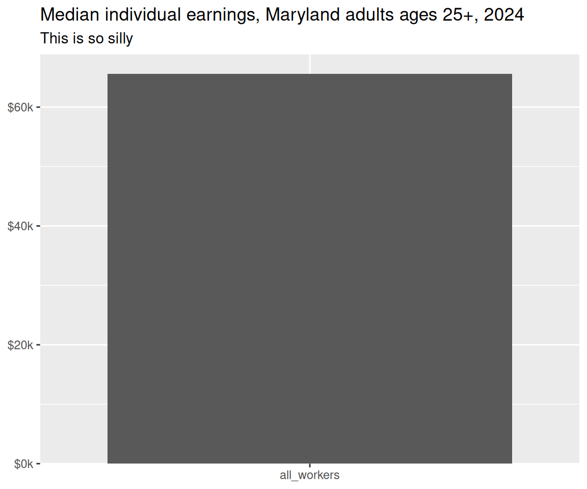
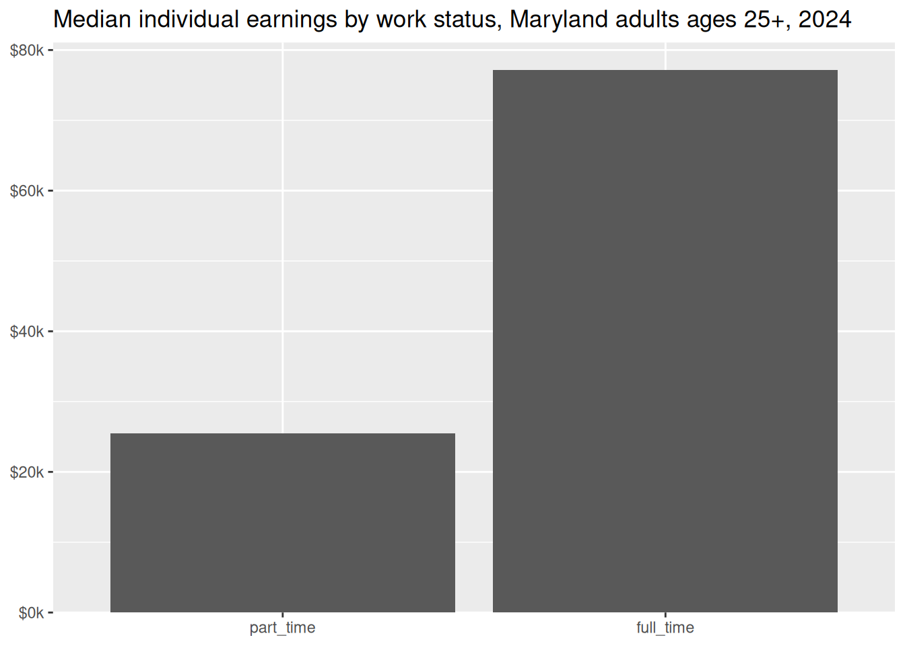
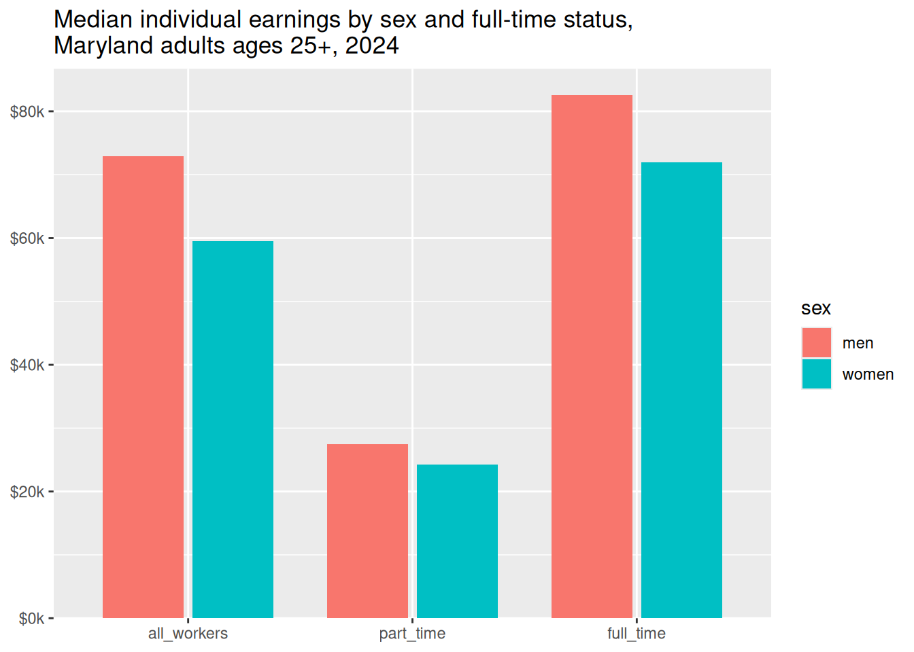

01. Intro to data viz
What is data visualization?
It’s pretty common to find a book with hundreds of pages of details on data visualization, but no definition. Two I’ve found useful:
The rendering of information in a visual format to help communicate data while also generating new patterns and knowledge through the act of visualization itself (Wilson, 2018, p. 8)
Wilson, M. O. (2018). The Cartography of W.E.B. Du Bois’s Color Line. In W.E.B. Du Bois’s Data Portraits: Visualizing Black America. The W.E.B. Du Bois Center at the University of Massachusetts Amherst.
The representation and presentation of data to facilitate understanding (Kirk, 2016, p. 19)
What should visualization do?
Data visualization is part art and part science. The challenge is to get the art right without getting the science wrong and vice versa. A data visualization first and foremost has to accurately convey the data. It must not mislead or distort…. At the same time, a data visualization should be aesthetically pleasing (Wilke, 2019, ch 1)
Wilke, C. O. (2019). Fundamentals of Data Visualization. https://clauswilke.com/dataviz/
Why visualize data?
As you create data viz, you’ll have different purposes. I think of them in two big categories:
- Visualization for myself / my colleagues (i.e. private)
- Visualization for others (i.e. public)
In order to make a public chart, I make many, many private ones.
Kirk (2016) uses an interesting framework (p. 76) where visualization can be mapped along two axes, experience and tone. Tone is broken into feeling vs reading, and experience is broken into explaining, exhibiting, and exploring. We’ll come back to this framework when we think about the purposes of our visualizations, what we want to convey, and how.
Kirk, A. (2016). Data visualisation: A handbook for data driven design. SAGE.
How can data visualization be used?
TipBrainstorming
Positive / constructive
- predicting weather
- making preparations
- sports analytics
- awareness in health
- explaining / understanding scope
- making an argument
- mitigating risk
- communicating risk / possible outcomes / dangers
Negative / destructive
- skewed, biased, not fully accurate data
- removal of context, e.g. absolutes instead of per capita
- making an argument
- downplaying or overemphasizing a risk
Do you even need a chart?
Sometimes we assume that because we have data, we should just make a chart. That can come with some tradeoffs that we’ll talk about over the course of the semester: charts abstract data, take up space in documents, and require certain types of literacy. They also take a lot of time and skill to make well. If you’re short on time, space, or knowhow, you might be better off using something simple like bullet points or pullout text to briefly describe your data, rather than making a chart that is big, unwieldy, or misleading.
For example, I analyze wage data to measure what’s referred to as the wage gap. From that, I know that Maryland workers ages 25 and up have median earnings of $65,586. On its own, there’s no reason to make a chart.
As an aside, the reason why I always do this analysis for adults ages 25+ is to be able to control for education.
If I have a few more numbers I might be able to justify taking up the space:

If this is a handout or report of some sort, I’m probably still better off with just text:
Of Maryland workers ages 25 and up, part-time workers earn a median $25,488, while full-time workers earn $77,203.
More likely, I’d round the numbers to the nearest thousand, and describe one number in relation to the other:
Of Maryland workers ages 25 and up, part-time workers earn a median of just over $25,000. Full-time workers average 3 times as much.
More numbers than this, especially with these large dollar amounts, becomes unwieldy. For a few observations, a table works without being overwhelming:
| status | median_earnings |
|---|---|
| all_workers | $65,586 |
| part_time | $25,488 |
| full_time | $77,203 |
We’ll talk about tables as a type of data visualization later, but if I want to make anything more than this, and I don’t need my reader to be able to read every single number, I’ll move to a chart.

That would be hard to cram into a short sentence, and the large gaps likely won’t be as apparent in a table, so this is now a good candidate for a chart.
Now that I’ve got data by both work status and sex, I might flip the story a little. Showing income by sex could be useful, but usually when we talk about wage gaps, it’s the ratio of one group’s income to another’s, e.g. “women on average make XX cents on the male dollar.” If we just calculate that for the numbers in this chart, and only want to present that, we’re back down to only 3 numbers.
| status | men | women | ratio_women_to_men |
|---|---|---|---|
| all_workers | $72,873 | $59,513 | $0.82 |
| part_time | $27,484 | $24,291 | $0.88 |
| full_time | $82,589 | $72,000 | $0.87 |
If my readers need to know exact dollar amounts and the ratio, a table like this works. If all they need are ratios, you might skip the chart and table and go for pullout text:
Among Maryland workers ages 25 and over, women earn an average of 82 cents on the male dollar. Because women are more likely to work part-time, the wage gap is smaller between only part-time workers or only full-time workers.
Tl;dr: Make a chart because you should, not because you could.
Lab
The lab for this topic will be a quick check that you have all the packages you need installed and working.